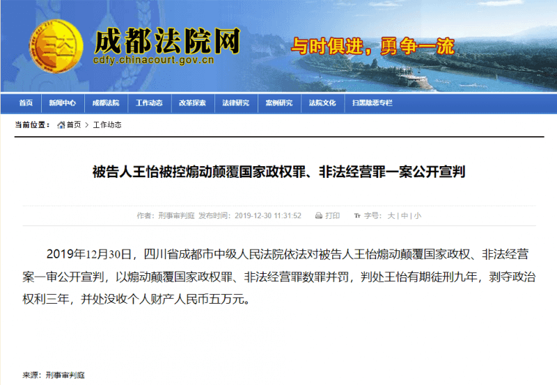

12月30日，四川省成都市中级人民以煽动颠覆国家政权罪、非法经营罪，判处四川成都秋雨圣约教会牧师王怡有期徒刑九年，剥夺政治权利三年，并处没收个人财产人民币五万元。

对此，国际特赦组织中国研究员潘嘉伟表示：“今日的判决是对中国所谓的宗教自由的嘲弄。王怡仅是信奉自己的宗教，并以和平的方式在中国争取人权。”
“他被判处有期徒刑9年令人震惊也极度不公。王怡是一名良心犯，应该立刻无条件获释。”
“王怡预先准备声明，以反驳法院的裁决，以及他可能在逼供下所作出的‘告白’，显示了他在被捕前已承受的压力。在中国，宗教信徒长期提心吊胆地生活，担心遭到带有政治动机的起诉和定罪。”
背景信息
2018年12月9日，成都警方夜袭秋雨圣约教会的会堂。约100名教友被带走，其中包括王怡牧师和他的妻子蒋蓉。
王怡牧师和他的妻子蒋蓉 ©Private
12月12日，秋雨圣约教会发表了一份王怡牧师几个月前准备的书面声明，在这份声明中，他写道：“无论这个政权对我犯怎样的罪名，泼以怎样的脏水，只要这罪名指向我的信仰，写作，言论和传教行为，那不过是魔鬼的谎言和试探。我将一概拒绝否认，服刑而不服法，伏法而不认罪。”
他此后以“煽动颠覆国家政权”的罪名被拘押，无法与外界联系。“煽动颠覆国家政权”是当局惯常利用的笼统罪名，用来对付异议人士或发声反对政府的人。
秋雨圣约教会创立于2005年，是中国最大及最著名的“家庭教会” 之一，该教会的领袖及教友不想将教会登记到宗教事务局或三自爱国教会之下。根据规定，基督教教会必须附属于上述二者，才能获得政府认可。由于这些教会一般在教友的家中聚会做礼拜，因此俗称为“家庭教会”。
自新修订的《宗教事务条例》于2018年2月1日生效以来，“家庭教会”表示在全国各地被进一步打压，当中以河南、浙江、广东与黑龙江省尤甚。当局从教堂移除十字架及基督教标语，没收或恣意破坏教会财产，下令教会停止运作，并查问教会领袖及教友。